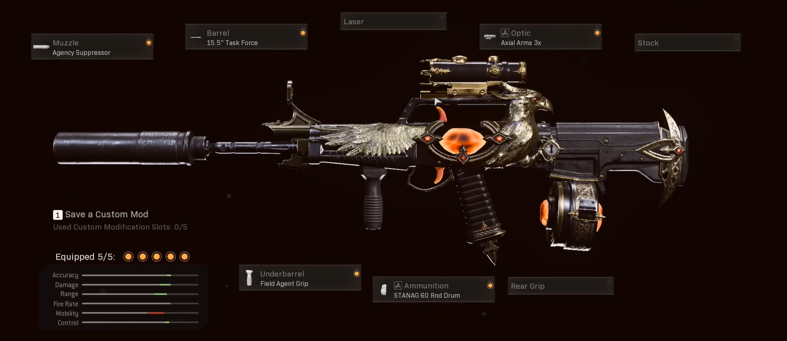
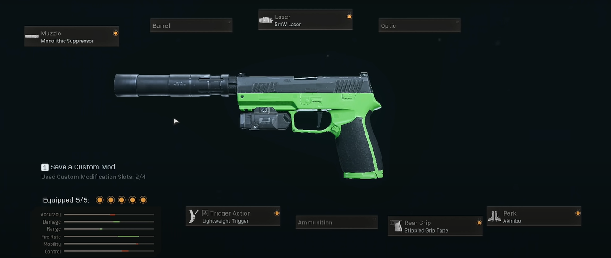

Caixas de armamento
No Warzone existe um sistema de loadouts que os grandes jogadores e a comunidade diz ser o maior diferencial do jogo e o que eles mais gostam. Basicamente, durante uma partida, os jogadores podem juntar dinheiro no jogo para comprar essa caixa de armamento, que no modo BR (Battle Royale) custa 10 mil e no ressurgência custa 7,5 mil, ou podem aguardar para que "drop" uma durante a partida, o que sempre acontece na primeira e na quinta safe.
Ao pegar essa caixa, o jogador poderá escolher entre algumas classes predefinidas e montadas por ele. Essa classe pode ser acompanhada por: até duas armas primárias, um tático, um letal e 3 vantagens. O único problema é que o jogador tem que evoluir as armas para liberar os acessórios considerados "bons" para cada uma, então até ele conseguir o nível desses acessórios vai ser difícil de jogar com uma arma mesmo ela vindo de uma caixa de armamento.
Caixas de armamento

Melhores classes
Como as classes são algo discutido pelos jogadores desde o início do Warzone, e além disso é a feature que mais ajuda um player a evoluir dentro do jogo, já que você pode escoher sua arma favorita para jogar, separei algumas que são consideradas "meta" na season 5.
Assault Rifle (AR)
C58
Acessórios
Boca - Supressor Monolítico
Cano - Força Tarefa 18,5"
Mira - Axial Arms 3,0x
Acoplamento - Empunhadurra de Agente de Campo
Munição - 45 Projéteis
LOADOUTS
A C58 veio junto com o passe da 4º temporada e logo virou a arma mais utilizada do jogo. Pelo fato dela ter um TTk baixo e um recuo fácil de controlar, todos os jogadores tinham ela como primeira opção nos seus loadouts, inclusive os pro players. Ela pode ser utilizada com qualquer smg, A Galo ou então com uma M19 ou Diamatti.
XM4
Acessórios
Boca - Supressor de Agência
Cano - Força tarefa 18,5"
Mira - Axial Arms 3x
Acoplamento - Empunhadura de Agente de Campo
Munição - STANAG 45 Projéteis
LOADOUTS
A XM4 tem o segundo TTK mais baixo das ARs, entretanto ela possui um recuo um pouco chato de controlar, mas se você tiver uma mira boa, ela será muito eficiente. Ela pode ser utilizada com uma MP5 ou com um GALO 12 por exemplo.
EM2
Acessórios
Boca - Supressor de Agência
Cano - Força tarefa 18,5"
Mira - Axial Arms 3x
Acoplamento - Empunhadura de Agente de Campo
Munição - STANAG 40 Projéteis
LOADOUTS
A EM2 tem um TTK muito baixo, porém tem um recuo bem difícil de controlar, então para usar essa arma você tem que treinar bastante com ela se não quiser passar raiva nas "fights". Assim como nas outras ARs, ela deve ser usada junto com uma arma para close range (SMG, Shotgun ou Pistola).
KRIG 6
Acessórios
Boca - Supressor de Agência
Cano - CMV Mil-Spec 15"
Mira - Axial Arms 3x
Acoplamento - Empunhadura de Agente de Campo
Munição - STANAG 60 Projéteis
LOADOUTS
Esse fuzil de asssalto é muito bom para médias e longas distâncias por causa do seu baixo recuo, então com ele você deve utilizar uma SMG como: MP5 MW, MP5 CW, Bullfrog ou uma escopeta como: GALO SA12.
FARA 83

Acessórios
Boca - Supressor de Agência
Cano - Liberator 19,5"
Mira - Axial Arms 3x
Acoplamento - Empunhadura de Agente de Campo
Munição - STANAG 60 Projéteis
LOADOUTS
A FARA tem um recuo muito fácil de controlar, por isso a longas distâncias você não terá dificuldade de usar ela, mesmo sendo um jogador casual. Sendo assim o recomendado é utilizar ela com uma SMG ou pistola para que tenha mais mobilidade.
AK-47 CW
Acessórios
Boca - Supressor de Som
Cano - Cano Spetnaz RPK 20"
Mira - Microflex LED
Coronha - Coronha PKM Spetnaz
Munição - 45 Projéteis
LOADOUTS
A AK-47 do Cold War tem o menor TTK entre as assault rifles. Por conta disso ela deve ser usada para curta distâncias, já que tem um recuo difícil de controlar. Ela pode ser usada como suporte para uma Swiss ou kar98, ou até ser utilizada com uma Krig por exemplo.
FAAC
Acessórios
Boca - Supressor de Som
Cano - Ultraleve 17,9"
Mira - Microflex LED
Coronha - Coronha de Combate SAS
Munição - 38 ou 50 Projéteis
LOADOUTS
A FAAC deve ser usada como uma SMG, já que ela atira muito rápido e tem uma mobilidade muito boa. Sabendo disso ela pode ser combinada com uma sniper ou uma AR pra longa distâncias.
QBZ
Acessórios
Boca - Supressor de Som
Cano - Força Tarefa 15,5"
Mira - Axial Arms 3,0x
Acoplamento - Empunhadura de Agente de Campo
Munição - STANAG 60 Projéteis
LOADOUTS
A QBZ pode ser usada com qualquer SMG que você goste de jogar, já que ela é boa para médias e longas distâncias. Além disso da para utilizar com uma shotgun como a Galo ou uma pistola como a Sykov.
AS VAL

Acessórios
Cano - VLK 200mm Osa
Laser - Tático
Coronha - VLK Strelok
Munição - 30 Projéteis
Cabo - Fita Aderrente Emborrachada
LOADOUTS
A AS VAl deve ser usada como uma SMG, junto com uma AR ou uma sniper no seu Loadout. O único problema dela é a quantidade de munição no pente, então é recomendado que so jogue com ela se a partida for de duplas ou solo.
Submachine guns (SMG)
OTS
Acessórios
Boca - Supressor de GRU
Cano - Força Tarefa 8.1"
Laser - Holofote Equipe Tigre
Coronha - Coronha Spetnaz
Munição - Carregador vdv rápido 40 projéteis
LOADOUTS
Essa SMG tem um dos TTKs (Time To Kill) mais baixos do jogo tendo uma eficiência até 10 metros excelente. Por isso você deve usar ela com um fuzil de assalto como: FARA 83 , KRIG 6, XM4 ou até com uma Sniper como a Kar98k.
MILANO

Acessórios
Boca - Supressor de Som
Laser - Holofote Equipe Tigre
Coronha - Coronha de combate SAS
Acoplamento - Empunhadura Brutal
Munição - STANAG 55 Projéteis
LOADOUTS
Essa SMG tem um recuo muito fácil de controlar e um TTK muit bom até médias distâncias, por isso ela deve ser utilizada como sniper suporte junto com uma Kar98k ou a Swiss.
MP5 CW

Acessórios
Boca - Supressor de Agência
Laser - Laser 5mw
Coronha - Coronha de combate SAS
Acoplamento - Empunhadura Brutal
Munição - STANAG 50 Projéteis
LOADOUTS
Essa SMG tem um dos TTKs (Time To Kill) mais baixos do jogo tendo uma eficiência até 10 metros excelente. Por isso você deve usar ela com um fuzil de assalto como: FARA 83 , KRIG 6, XM4 ou até com uma Sniper como a Kar98k.
MP5 MW
Acessórios
Boca - Supressor Monolítico
Laser - Laser 5mw
Coronha - Coronha de combate SAS
Acoplamento - Empunhadura de Mercenário
Munição - Carregador de 30 Projéteis 10mm
LOADOUTS
A MP5 do MW teve um stealth buff na season 5 que melhorou a munição de 10mm e com isso ela ficou com um TTK mais baixo que o da OTS, a única parte ruim é que você só terá 30 projéteis para matar seus inimigos, mas se estiver jogando duplas ou solo ela é a escolha certa. DEve ser usada com uma assault como krig ou fara que atiram rápido e podem te ajudar de perto caso falte bala na SMG.
PPSH
Acessórios
Boca - Supressor de GRU
Cano - Força Tarefa 15.7"
Coronha - Coronha PKM Spetnaz
Cabo - Tiras Serpente
Munição - STANAG 55 Projéteis
LOADOUTS
A PPSH não foi muito usada por conta do seu recuo que é bem esquisito, o que atrapalha os jogadores mais inexperientes, entretanto se você gostar dela dá para colocar em um de seus Loadouts junto com uma assault ou até uma sniper.
BULLFROG
Acessórios
Boca - Supressor de Som
Cano - Força Tarefa 7.4"
Laser - Holofote Equipe Tigre
Coronha - Coronha Esqueleto KGB
Munição - 65 Projéteis
LOADOUTS
Essa arma pe muito boa para quem está começando a jogar por ter um recuo muito bom e um iron sight bem clean. Ela pode ser utilizada com uma assault, uma sniper ou uma LMG, vai da preferência do jogador.
MAC-10

Acessórios
Boca - Supressor de Agência
Cano - Força Tarefa 5.9"
Coronha - Sem Coronha
Cabo - Tiras Serpente
Munição - Tambor STANAG 53 Projéteis
LOADOUTS
A MAC-10 é a queridinha de todos desde que foi lançada. Pelo fato de ela atirar muito rápido quando você erra tira não é muito penalizado já que o próximo que você acertar já vai chegar no seu adverssário logo em seguida. Eu diria que ela é a melhor para rush depois da OTS e pode ser utilizada com qualquer arma para longas distâncias.
LC10

Acessórios
Boca - Supressor de Som
Cano - Força Tarefa 13.9"
Laser - Holofote Equipe Tigre
Coronha - Coronha de Combatente
Munição - STANAG 55 Projéteis
LOADOUTS
A LC10 nunca foi muito utilizada por conta do seu alto TTK, mas se você nâo quiser errar tiros ela é a arm certa, por ter uma precisão absurda. ela é muito boa de sniper suporte e acho que só vale usar ela nessa situação.
TEC-9

Acessórios
Boca - Repetidor de Disparo Automático
Cano - Força Tarefa 4.9"
Coronha - Coronha de combate SAS
Acoplamento - Empunhadura de Agente de Campo
Munição - Tambor STANAG 48 Projéteis
LOADOUTS
Essa SMG foi lançada na season 5 com um TTK muit bom, o único problema é que ela já foi nerfada logo em seguida e não está tão boa quanto no começo, entretanto ainda está "utilizavel". Caso você queira jogar com ela o recomendado seria uma Krig ou uma Stoner.
CX9
Acessórios
Cano - CX-38S
Laser - Laser Tático
Coronha - CX-FA
Cabo - Fita Tática CX-9
Munição - Carregador 50 Projéteis
LOADOUTS
A CX-9 veio na season 5 mas não entrou no meta mesma sendo muito boa, o único problemaa é que não da para competir com a OTS. Ela pode ser usada com qualquer assault ou LMG, vai da sua preferência.
LIGHTMACHINE GUNS (LMG)
MG 82

Acessórios
Boca - Supressor de Agência
Cano - Alta Performance 17.1"
Mira - Axial Arms 3x
Acoplamento - Empunhadura de Agente de Campo
Cabo - Tiras Serpente
LOADOUTS
A MG chegou a ser considerada a arma mais roubada do jogo quando foi lançada e todos estavam usando ela, porém isso só durou 3 dias. Após o nerf ela caiu em desuso pelo fato de terem aumentado seu recuo absurdamente, então para você usar ela tem que ser um jogador muit bom. Se esse for seu caso recomendo usar ela com uma SMG com boa mobilidade como a MAC-10 ou OTS.
STONER
Acessórios
Boca - Supressor de Agência
Cano - Força Tarefa 21.8"
Mira - Axial Arms 3x ou Royal kross 4x
Acoplamento - Empunhadura de Agente de Campo
Munição - Carregador Rápido
LOADOUTS
A Stoner entrou de vez pro meta da Season 5 principalmente para os jogadores do controle por ter um recuo muito bom e um TTK incrível, o único problema é seu peso e o tempo de reload que pode atrasar um pouco as fights. Levando isso em consideração ela deve ser usada com uma SMG para ter mobilidade ou com a GALO.
PKM
Acessórios
Boca - Supressor Monolítico
Cano - Cano Estendido 26.9"
Laser - Laser tático
Mira - VLK 3,0x
Acoplamento - Empunhadura de Comando
LOADOUTS
A PKM nunca chegou a ser meta, porém já deve ter dado dor de cabeça para você alguma vez, isso porque ela tem 150 projéteis no pente e parece que não acabam nunca. Com isso recomendo usar ela com uma SMG que dê mobilidade.
SNIPER
Kar98k
Acessórios
Boca - Supressor Monolítico
Cano - Singuard Personalizado 27,6"
Laser - Laser tático
Mira - Mira de Franco Atirador
Coronha - Apoio de Rosto Esportivo FTAC
LOADOUTS
A Kar98k é um fuzil de precisão extramamente rápido, isso faz com que seja possível utilizar ela em distâncias menores do que um fuzil desse tipo normalmente é utilizado. Sendo assim as melhores combinações a se usar com ela seria uma SMG como: MP5 CW, Bullfrog ou até mesmo um fuzil de assalto com uma mira de curta distância e com um ttk baixo, como no caso da AK-47 CW ou XM4.
SWISS
Acessórios
Boca - Supressor de Som
Cano - Recon de Combate 24,9"
Laser - Laser SWAT 5mw
Acoplamento - Empunhadura Brutal
Cabo - Tiras Serpente
LOADOUTS
A SWISS é um Sniper que possui uma puxada de mira muito rápida e com isso hoje é a mais utilizada do jogo, na frente até mesmo da queridinha "Kar98k". Da mesma forma da Kar, ela deve ser utilizada com alguma arma para curtas distâncias como uma SMG, uma Galo 12, ou até uma AK-47 CW.
PISTOLS
M19
Acessórios
Boca - Supressor Monolítico
Laser - Laser 5mW
Ação de Gatilho - Gatilho Leve
Cabo - Fita Aderente Pontilhada
Vantagem - Duplas (Akimbo)
LOADOUTS
A principal vantagem de usar uma pistola no seu LOADOUT, é que além dela ter um TTK muito baixo a curta distâncias, você já vai poder ter uma vantagem como o Espectro ou o Alerta Vermelho na primeira caixa, já que ela se encaixa na classe de armas secundárias e não é necessário usar a vantagem massacre.
SHOTGUNS
GALO SA12
Acessórios
Boca - Abafador de Agência
Cano - Pesado Reforçado 21,4"
Laser - Laser 5mw
Coronha - Sem Coronha
Munição - Tubo STANAG 12 Projéteis
LOADOUTS
Essa doze pode ser utilizada em diversos Loadouts, como ela é uma arma pra curta distância e você só vai usar ela até 10 metros, é necessário que sua outra arma seja pra médias e longas distâncias. Para cumprir esse objetivo você pode optar pela FARA 83, Krig e os outros fuzis de assalto, a Stoner ou até mesmo usar ela com uma Kar98k ou Swiss.